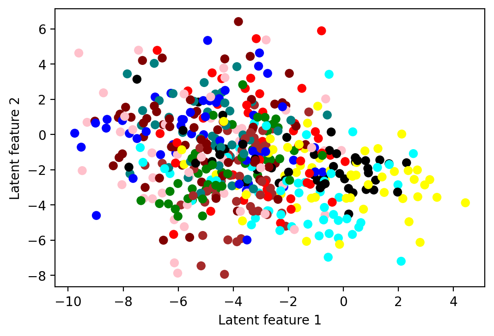

Autoencoder with both traditional NN and CNN
An autoencoder neural network is an unsupervised machine learning algorithm. In an autoencoder, the number of hidden cells is smaller than the input cells. The number of input cells in autoencoders equals to the number of output cells. On an AE network, we train it to display the output, which is as close as the fed input, which forces AEs to find common patterns and generalize the data. We use autoencoders for the smaller representation of the input. This property is useful in many applications, in particular in compressing data or comparing images on a metric beyond pixel-level comparisons.
Autoencoder with traiditional NN
import torch
import torch.nn as nn
from torchvision import datasets, transforms
import torchvision
import numpy as np
torch.manual_seed(0)
torch.backends.cudnn.deterministic = True
device = torch.device('cuda' if torch.cuda.is_available() else 'cpu')
device
device(type='cuda')Dataset
# Define the transform to preprocess the data
transform = transforms.Compose([transforms.ToTensor()])
# Load the MNIST dataset
mnist_data = datasets.MNIST(root='.', train=True, download=True, transform=transform)
# Define the data loader
data_loader = torch.utils.data.DataLoader(mnist_data, batch_size=64, shuffle=True)
mnist_data_test = datasets.MNIST(root='.', train=False, download=True, transform=transform)
test_loader = torch.utils.data.DataLoader(mnist_data_test, batch_size=64, shuffle=True)
Downloading http://yann.lecun.com/exdb/mnist/train-images-idx3-ubyte.gz
Downloading http://yann.lecun.com/exdb/mnist/train-images-idx3-ubyte.gz to ./MNIST/raw/train-images-idx3-ubyte.gz
0%| | 0/9912422 [00:00<?, ?it/s]
Extracting ./MNIST/raw/train-images-idx3-ubyte.gz to ./MNIST/raw
Downloading http://yann.lecun.com/exdb/mnist/train-labels-idx1-ubyte.gz
Downloading http://yann.lecun.com/exdb/mnist/train-labels-idx1-ubyte.gz to ./MNIST/raw/train-labels-idx1-ubyte.gz
0%| | 0/28881 [00:00<?, ?it/s]
Extracting ./MNIST/raw/train-labels-idx1-ubyte.gz to ./MNIST/raw
Downloading http://yann.lecun.com/exdb/mnist/t10k-images-idx3-ubyte.gz
Downloading http://yann.lecun.com/exdb/mnist/t10k-images-idx3-ubyte.gz to ./MNIST/raw/t10k-images-idx3-ubyte.gz
0%| | 0/1648877 [00:00<?, ?it/s]
Extracting ./MNIST/raw/t10k-images-idx3-ubyte.gz to ./MNIST/raw
Downloading http://yann.lecun.com/exdb/mnist/t10k-labels-idx1-ubyte.gz
Downloading http://yann.lecun.com/exdb/mnist/t10k-labels-idx1-ubyte.gz to ./MNIST/raw/t10k-labels-idx1-ubyte.gz
0%| | 0/4542 [00:00<?, ?it/s]
Extracting ./MNIST/raw/t10k-labels-idx1-ubyte.gz to ./MNIST/rawModel Build
It is composed of two main parts: an encoder and a decoder. The encoder maps the input data to a lower-dimensional representation (also known as the bottleneck or latent representation), and the decoder maps the bottleneck representation back to the original input space (reconstruction). The goal of the autoencoder is to learn a compact representation of the input data that can be used for tasks such as dimensionality reduction, denoising, and generative modeling.
![image.png]()
class Autoencoder(nn.Module):
def __init__(self):
'''A class that implements an AutoEncoder with NN linear
Implementation of the Encoder and the decoder. Input size is 784 while using the MNISt dataset.
Remember the input of the encoder is the same as the last output of decoder
'''
super(Autoencoder, self).__init__()
self.encoder = nn.Sequential(
nn.Linear(28*28, 128),
nn.ReLU(),
nn.Linear(128, 64),
nn.ReLU(),
nn.Linear(64, 32))
self.decoder = nn.Sequential(
nn.Linear(32, 64),
nn.ReLU(),
nn.Linear(64, 128),
nn.ReLU(),
nn.Linear(128, 28*28),
nn.Sigmoid())
def forward(self, x):
"""
The forward function takes in an image (x) and returns the reconstructed image.
The latent is also returned in this case while it can be used for the visualization of latent representation
"""
latent = self.encoder(x)
x = self.decoder(latent)
return x,latent
# Define the model and move it to the device
model = Autoencoder()
model = model.to(device)
# Define the loss function and optimizer
criterion = nn.MSELoss()
optimizer = torch.optim.Adam(model.parameters(), lr=0.001)
model.parameters<bound method Module.parameters of Autoencoder(
(encoder): Sequential(
(0): Linear(in_features=784, out_features=128, bias=True)
(1): ReLU()
(2): Linear(in_features=128, out_features=64, bias=True)
(3): ReLU()
(4): Linear(in_features=64, out_features=32, bias=True)
)
(decoder): Sequential(
(0): Linear(in_features=32, out_features=64, bias=True)
(1): ReLU()
(2): Linear(in_features=64, out_features=128, bias=True)
(3): ReLU()
(4): Linear(in_features=128, out_features=784, bias=True)
(5): Sigmoid()
)
)>help(model)Train Model
# Train the model
for epoch in range(10):
for data in data_loader:
img, _ = data
img = img.view(img.size(0), -1)
img = img.to(device)
output, latent = model(img)
loss = criterion(output, img)
optimizer.zero_grad()
loss.backward()
optimizer.step()
print("Epoch [{}/{}], Loss: {:.4f}".format(epoch+1, 10, loss.item()))Epoch [1/10], Loss: 0.0311
Epoch [2/10], Loss: 0.0249
Epoch [3/10], Loss: 0.0208
Epoch [4/10], Loss: 0.0159
Epoch [5/10], Loss: 0.0126
Epoch [6/10], Loss: 0.0125
Epoch [7/10], Loss: 0.0132
Epoch [8/10], Loss: 0.0132
Epoch [9/10], Loss: 0.0114
Epoch [10/10], Loss: 0.0096# Visualize the original and reconstructed images
%matplotlib inline
import matplotlib
import matplotlib.pyplot as plt
import numpy as np
from torch.utils.data import DataLoader
dataloader = DataLoader(mnist_data, batch_size=512, shuffle=True)
for data in dataloader:
img, labels = data
img = img.view(img.size(0), -1)
model.cpu()
_,latent = model(img)
break
d = {0: 'red', 1: "green", 2: "blue", 3: "maroon", 4: "yellow",
5: "pink", 6: "brown", 7: "black", 8: "teal", 9: "aqua"}
colors = []
for e in labels.numpy():
colors.append(d[e])
fig = plt.figure(dpi=200)
ax = fig.add_subplot(111)
ax.set_xlabel('Latent feature 1')
ax.set_ylabel('Latent feature 2')
ax.scatter(latent[:,0].detach().numpy(), latent[:,1].detach().numpy(),
c=list(colors))<matplotlib.collections.PathCollection at 0x7fc631a52580>
np.random.seed(42)
from sklearn.manifold import TSNE
tsne = TSNE()
X_valid_2D = tsne.fit_transform(torch.Tensor.numpy(latent, force=True))
#X_valid_2D = (X_valid_2D - X_valid_2D.min()) / (X_valid_2D.max() - X_valid_2D.min())/usr/local/lib/python3.8/dist-packages/sklearn/manifold/_t_sne.py:780: FutureWarning: The default initialization in TSNE will change from 'random' to 'pca' in 1.2.
warnings.warn(
/usr/local/lib/python3.8/dist-packages/sklearn/manifold/_t_sne.py:790: FutureWarning: The default learning rate in TSNE will change from 200.0 to 'auto' in 1.2.
warnings.warn(plt.scatter(X_valid_2D[:, 0], X_valid_2D[:, 1], s=10, cmap="tab10")
plt.axis("off")
plt.show()
Autoencoder with CNN
In this part, we will inplement AE using the “deconvolution” (or transposed convolution) with Conv2D and ConvTranspose2d. Conv2D is mainly used when you want to detect features, e.g., in the encoder part of an autoencoder model, and it may shrink your input shape (that's the main idea of the encode to reduce dimension). Conversely, Conv2DTranspose is used for creating features, for example, in the decoder part of an autoencoder model for constructing an image (for the reconstruction). It makes the input shape larger.
Dataset
# Load the data
transform = transforms.Compose(
[transforms.Resize(256),
transforms.ToTensor()])
trainset = torchvision.datasets.CIFAR10(root='./data', train=True, download=True, transform=transform)
trainloader = torch.utils.data.DataLoader(trainset, batch_size=64, shuffle=True, num_workers=2)
testset = torchvision.datasets.CIFAR10(root='./data', train=False, download=True, transform=transform)
testloader = torch.utils.data.DataLoader(testset, batch_size=64, shuffle=True, num_workers=2)Downloading https://www.cs.toronto.edu/~kriz/cifar-10-python.tar.gz to ./data/cifar-10-python.tar.gz
0%| | 0/170498071 [00:00<?, ?it/s]
Extracting ./data/cifar-10-python.tar.gz to ./data
Files already downloaded and verifiedModel Build
import torch
import torch.nn as nn
import torchvision
import torchvision.transforms as transforms
import torch.nn.functional as F
device = torch.device('cuda' if torch.cuda.is_available() else 'cpu')
device
class Autoencoder(nn.Module):
def __init__(self):
"""
A Conv2d module applies a 2D convolution over an input signal composed of several input planes.
We define:
kernel_size: Size of the convolving kernel
stride : controls the stride for the cross-correlation, a single number or a tuple.
padding : controls the amount of padding applied to the input.
in_channels : 3. In CIFAR10, each image has 3 color channels and is 32x32 pixels large.
So we can use 3 channels instead of using the black-and-white
out_channels : 6
As always the input of the decoder is the output of the encoder and the decoder reconstruct the initial data (so output is 3).
"""
super(Autoencoder, self).__init__()
self.encoder = nn.Sequential(
nn.Conv2d(3, 6, kernel_size=3, stride=1, padding=1),
nn.ReLU(True),
nn.MaxPool2d(kernel_size=2, stride=2),
nn.Conv2d(6, 16, kernel_size=3, stride=1, padding=1),
nn.ReLU(True),
nn.MaxPool2d(kernel_size=2, stride=2)
)
self.decoder = nn.Sequential(
nn.ConvTranspose2d(16, 6, kernel_size=2, stride=2),
nn.ReLU(True),
nn.ConvTranspose2d(6, 3, kernel_size=2, stride=2),
nn.Sigmoid()
)
def forward(self, x):
x = self.encoder(x)
x = self.decoder(x)
return x
# Create the model
model = Autoencoder()
# Define the loss function and optimizer
criterion = nn.MSELoss()
optimizer = torch.optim.Adam(model.parameters(), lr=0.001)
model.parameters<bound method Module.parameters of Autoencoder(
(encoder): Sequential(
(0): Conv2d(3, 6, kernel_size=(3, 3), stride=(1, 1), padding=(1, 1))
(1): ReLU(inplace=True)
(2): MaxPool2d(kernel_size=2, stride=2, padding=0, dilation=1, ceil_mode=False)
(3): Conv2d(6, 16, kernel_size=(3, 3), stride=(1, 1), padding=(1, 1))
(4): ReLU(inplace=True)
(5): MaxPool2d(kernel_size=2, stride=2, padding=0, dilation=1, ceil_mode=False)
)
(decoder): Sequential(
(0): ConvTranspose2d(16, 6, kernel_size=(2, 2), stride=(2, 2))
(1): ReLU(inplace=True)
(2): ConvTranspose2d(6, 3, kernel_size=(2, 2), stride=(2, 2))
(3): Sigmoid()
)
)>devicedevice(type='cuda')Model Train
batch_size = 64
num_epochs = 2def train(model, device, train_loader, optimizer, epoch):
model.train()
for batch_idx, data in enumerate(trainloader):
data,_ = data
data= data.to(device)
optimizer.zero_grad()
output = model(data)
loss = criterion(output,data)
loss.backward()
optimizer.step()
if batch_idx % 100 == 0:
print('Train Epoch: {} [{}/{} ({:.0f}%)]\tLoss: {:.6f}'.format(
epoch, batch_idx * len(data), len(train_loader.dataset),
100. * batch_idx / len(trainloader), loss.item()))model=model.to(device)
for epoch in range(5):
train(model, device, trainloader, optimizer, epoch)Train Epoch: 0 [0/50000 (0%)] Loss: 0.063875
Train Epoch: 0 [6400/50000 (13%)] Loss: 0.045370
Train Epoch: 0 [12800/50000 (26%)] Loss: 0.014933
Train Epoch: 0 [19200/50000 (38%)] Loss: 0.006535
Train Epoch: 0 [25600/50000 (51%)] Loss: 0.004210
Train Epoch: 0 [32000/50000 (64%)] Loss: 0.003744
Train Epoch: 0 [38400/50000 (77%)] Loss: 0.002354
Train Epoch: 0 [44800/50000 (90%)] Loss: 0.002912
Train Epoch: 1 [0/50000 (0%)] Loss: 0.002052
Train Epoch: 1 [6400/50000 (13%)] Loss: 0.002402
Train Epoch: 1 [12800/50000 (26%)] Loss: 0.001827
Train Epoch: 1 [19200/50000 (38%)] Loss: 0.001971
Train Epoch: 1 [25600/50000 (51%)] Loss: 0.002260
Train Epoch: 1 [32000/50000 (64%)] Loss: 0.001934
Train Epoch: 1 [38400/50000 (77%)] Loss: 0.001922
Train Epoch: 1 [44800/50000 (90%)] Loss: 0.001997
Train Epoch: 2 [0/50000 (0%)] Loss: 0.002196
Train Epoch: 2 [6400/50000 (13%)] Loss: 0.001842
Train Epoch: 2 [12800/50000 (26%)] Loss: 0.001902
Train Epoch: 2 [19200/50000 (38%)] Loss: 0.001880
Train Epoch: 2 [25600/50000 (51%)] Loss: 0.002410
Train Epoch: 2 [32000/50000 (64%)] Loss: 0.001875
Train Epoch: 2 [38400/50000 (77%)] Loss: 0.001823
Train Epoch: 2 [44800/50000 (90%)] Loss: 0.001993
Train Epoch: 3 [0/50000 (0%)] Loss: 0.001671
Train Epoch: 3 [6400/50000 (13%)] Loss: 0.001994
Train Epoch: 3 [12800/50000 (26%)] Loss: 0.001673
Train Epoch: 3 [19200/50000 (38%)] Loss: 0.001428
Train Epoch: 3 [25600/50000 (51%)] Loss: 0.001395
Train Epoch: 3 [32000/50000 (64%)] Loss: 0.001551
Train Epoch: 3 [38400/50000 (77%)] Loss: 0.001687
Train Epoch: 3 [44800/50000 (90%)] Loss: 0.001552
Train Epoch: 4 [0/50000 (0%)] Loss: 0.001779
Train Epoch: 4 [6400/50000 (13%)] Loss: 0.001689
Train Epoch: 4 [12800/50000 (26%)] Loss: 0.001414
Train Epoch: 4 [19200/50000 (38%)] Loss: 0.001699
Train Epoch: 4 [25600/50000 (51%)] Loss: 0.001915
Train Epoch: 4 [32000/50000 (64%)] Loss: 0.001190
Train Epoch: 4 [38400/50000 (77%)] Loss: 0.001611
Train Epoch: 4 [44800/50000 (90%)] Loss: 0.001580model = model.to(device)
for epoch in range(5):
for data in trainloader:
img, _ = data
img = img.to(device)
# Forward pass
output = model(img)
loss = criterion(output, img)
# Backward and optimize
optimizer.zero_grad()
loss.backward()
optimizer.step()
print('eppoch [{}/{}], loss:{:.4f}'.format(epoch+1, 5, loss.item()))eppoch [1/5], loss:0.0067
eppoch [2/5], loss:0.0014
eppoch [3/5], loss:0.0025
eppoch [4/5], loss:0.0009
eppoch [5/5], loss:0.0014